18/02/2020 — Nam 32 tuổi đau ngực bên phải. Không hề có ST chênh lên, nhưng điều đó không quan trọng.
Bản dịch tiếng Việt của bài "32 yo with right sided chest pain. Zero ST Elevation, but that does not matter." – Dr. Smith’s ECG Blog. Giữ nguyên toàn bộ 14 hình ảnh của bản gốc.
Ca này do một độc giả gửi đến. Anh ấy đã phân tích toàn bộ ca bệnh rất tốt, vì vậy tôi giữ (gần như) nguyên lời của anh ấy.
Nam 32 tuổi, đau ngực bên phải khu trú, kiểu "như dao đâm", khởi phát đột ngột 1 giờ. Mức đau nặng nhất 7/10, hiện tại 4/10, có lan nhẹ ra hai cánh tay. Không có triệu chứng kèm theo.
Tiền sử bệnh – xơ cứng rải rác (MS), tăng cholesterol máu, hút thuốc lá.
Tiền sử gia đình – bố bị nhồi máu cơ tim năm 45 tuổi
Dấu hiệu sinh tồn – HA 133/83, nhịp thở 20, độ bão hòa oxy 95%, khám không có gì đặc biệt. Đang chờ kết quả xét nghiệm máu.

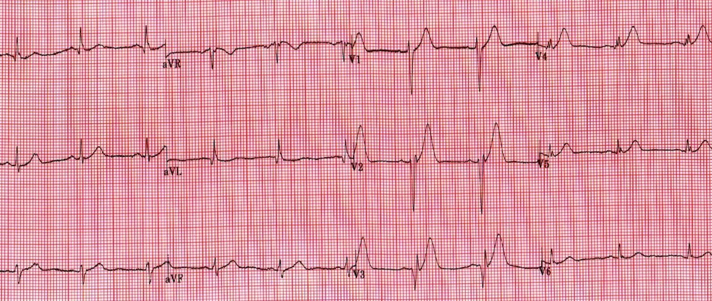
Diễn giải của độc giả:
Điện tâm đồ 1
Nhịp xoang khoảng 65 lần/phút
trục bình thường
chậm dẫn truyền trong thất không đặc hiệu (IVCD) hoặc blốc nhánh phải không hoàn toàn (incomplete RBBB). QRS 100 ms
ST chênh xuống kiểu "võng xuống" (sagging) kín đáo ở I, aVL, V6. Không có ST chênh lên
Sóng T ở các chuyển đạo trước V1-5 rất cao, đối xứng và lớn không tương xứng (đặc biệt ở V4), nhưng không quá nhọn cũng không bị tù.
QTc bình thường đến ngắn, khoảng 400 ms
Tăng tiến sóng R chậm, có thể có sóng Q bệnh lý ở V3, I, aVL
Bình luận của độc giả:
Mặc dù tôi cảm thấy sóng T ở các chuyển đạo trước có thể là sóng T tối cấp, gợi ý một tương đương STEMI (OMI), nhưng vào thời điểm đó tôi không cho rằng điều này có giá trị chẩn đoán. Do đau ngực không điển hình và bệnh nhân trông khỏe, kế hoạch ban đầu là ghi các điện tâm đồ liên tiếp, chụp X-quang ngực, dùng morphine và đánh giá lại cùng kết quả xét nghiệm máu ban đầu sau một giờ. Không chuyển phòng thông tim trừ khi ST chênh lên tiến triển. Kế hoạch này đã được bác sĩ nội trú tim mạch trực (registrar) đồng ý.
Bản ghi này được ghi ngay sau đó (độc giả không cho biết thời điểm chính xác):

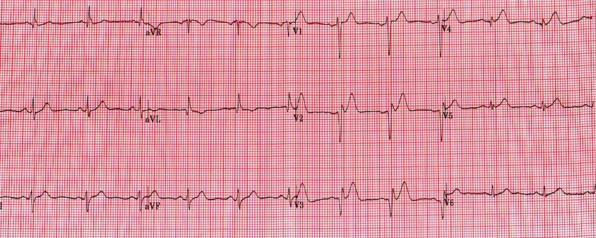
Diễn giải của độc giả
Nhìn chung rất giống bản ghi đầu tiên.
Biên độ sóng T giảm và sóng T đảo ngược ở aVL.
Biên độ sóng R ở V3 giảm và xuất hiện sóng Q hẹp mới ở V4.
Có lẽ có ST chênh lên 0,5-1 mm chỉ ở V1.
Tôi cho rằng những thay đổi này là do vị trí đặt điện cực ngực, V1-2 đã bị đặt quá cao ở điện tâm đồ ban đầu.
Diễn biến lâm sàng
Các điện tâm đồ tiếp theo trong 2 giờ sau đó đều tương tự. Bệnh nhân trông khỏe và cơn đau giờ chỉ còn âm ỉ nhẹ 1/10 (Bình luận của Smith: do morphine chăng?). X-quang ngực không có gì đặc biệt, xét nghiệm máu cũng vậy, ngoại trừ troponin I độ nhạy cao là 110 ng/L (bách phân vị thứ 99 là 34 ng/L). (Bình luận của Smith: kết quả này đủ để chẩn đoán nhồi máu cơ tim cấp, và ngay cả khi điện tâm đồ âm tính, đó vẫn là lý do để kích hoạt phòng thông tim nếu còn đau đang tiếp diễn – điều mà dĩ nhiên morphine có thể xóa đi)
Tôi điều trị bệnh nhân như một NSTEMI với clopidogrel (đã dùng liều nạp aspirin), fondaparinux, và bắt đầu atorvastatin cùng bisoprolol. Bệnh nhân được nhập thẳng vào khoa tim mạch và theo dõi từ xa (telemetry).
Khi tôi quay lại kiểm tra bệnh nhân vào cuối ca trực đêm, bệnh nhân đang ngủ và không có thêm điện tâm đồ nào để xem.
Sáng hôm sau, điện tâm đồ dưới đây được ghi. Điện tâm đồ cho thấy phức bộ QS ở khắp các chuyển đạo trước-bên, gợi ý một STEMI thành trước diện rộng đã hoàn tất. Troponin xét nghiệm lại lớn hơn 10.000 ng/L (nhồi máu cơ tim diện rộng, chúng tôi không có giá trị đỉnh)

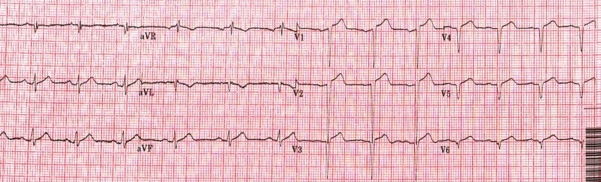
Chụp mạch vành
Bệnh nhân được đưa vào phòng thông tim, phát hiện tắc hoàn toàn LAD đoạn giữa (sau một nhánh chéo lớn) và được điều trị thành công bằng PCI và đặt stent. Ngoài ra còn có tổn thương "đứng ngoài vô can" (bystander) và đã lên kế hoạch PCI theo giai đoạn cho RCA đoạn gần. Bệnh nhân hồi phục tốt và xuất viện mà không có rối loạn chức năng thất trái đáng kể hay biến chứng nào khác.
Bàn luận
Nhìn lại, tôi cảm thấy có rất ít nguyên nhân khác ngoài tắc LAD cấp có thể tạo ra một điện tâm đồ như thế này. Tôi tin đây là một trong những ca "STEMI kín đáo", khi cả điện tâm đồ lẫn triệu chứng đều không quá rõ ràng hay nặng nề và không thấy diễn tiến thông thường.
Tôi coi những ca này là "nhồi máu âm thầm" (insidious infarcts); tôi đã gặp chúng ở mọi vùng nhồi máu và tôi không nghĩ chúng đặc biệt hiếm. Về cơ bản, bệnh nhân khá dễ chịu và điện tâm đồ không rõ ràng, nhưng rốt cuộc bệnh nhân có sóng Q, troponin tăng rất cao, và chúng ta đã bỏ lỡ cơ hội tái tưới máu động mạch vào lúc quan trọng nhất. Những bệnh nhân này thường trẻ hơn và hồi phục tốt, nhưng tôi không nghi ngờ gì rằng nguy cơ suy tim, rối loạn nhịp và tử vong sớm trong tương lai của họ tăng lên rất nhiều so với nếu họ được PCI tiên phát (PPCI) và điều trị STEMI tiêu chuẩn. Không cần phải nói, những ca như thế này đã tác động đáng kể đến tôi và khiến tôi luôn cố gắng giỏi hơn trong việc nhận ra các hình ảnh điện tâm đồ kín đáo và đấu tranh để những bệnh nhân như thế này được chụp mạch vành cấp cứu.
Lẽ ra có thể làm gì khác đi.
Áp dụng phương trình phân biệt STEMI thành trước kín đáo với tái cực sớm của Smith (4 biến) cho điện tâm đồ đầu tiên cho điểm 20,6, gợi ý STEMI (> 18,2). Tuy vậy, có thể nói trường hợp này nằm ngoài chỉ định của phương trình vì có sóng Q khá rõ ở V3 (lưu ý rằng có rất nhiều tiêu chí loại trừ khi dùng phương trình này). (Bình luận của Smith: các tiêu chí loại trừ có mặt là vì chúng tự thân đã chỉ điểm tắc LAD cấp. Nếu có bất kỳ một trong 8 tiêu chí đó, thì đó là tắc LAD cho đến khi chứng minh được điều ngược lại. Đây là link về cách sử dụng công thức).
Siêu âm tim tại giường (đặc biệt với kỹ thuật đánh dấu mô (speckle tracking) nếu có) có thể đã giúp ích nếu có rối loạn vận động thành khu trú.
Theo dõi liên tục điện tâm đồ 12 chuyển đạo cũng có thể đã giúp ích.
Các nguồn FOAM (giáo dục y khoa mở, miễn phí) thúc đẩy việc nhận diện và điều trị sớm các hình ảnh "tương đương STEMI" được Stephen Smith và Pendell Meyers đẩy mạnh. Điều này được tóm gọn trong thuật ngữ OMI/NOMI mà họ đề xuất để thay thế cho STEMI/NSTEMI.
https://emcrit.org/emcrit/omi-manifesto/ (Tuyên ngôn OMI trên EMCrit)
http://hqmeded-ecg.blogspot.com/2018/04/the-omi-manifesto.html (Tuyên ngôn OMI – OMI Manifesto)
Các link về phương trình phân biệt STEMI thành trước với tái cực sớm ở dưới đây.
http://hqmeded-ecg.blogspot.com/p/rules-equations.html (Các quy tắc và phương trình)
https://www.ncbi.nlm.nih.gov/pubmed/28460689 (bài báo trên PubMed)
https://www.mdcalc.com/subtle-anterior-stemi-calculator-4-variable (công cụ tính STEMI thành trước kín đáo, bản bốn biến, trên MDCalc)
https://apps.apple.com/us/app/subtlestemi/id617146818 (ứng dụng SubtleSTEMI cho iOS)
https://play.google.com/store/apps/details?id=com.SMITH490.ecg_smith&hl=en (ứng dụng cho Android)
Bình luận của Smith:
1. Không bao giờ được cho morphine cho đến khi bạn đã quyết định chuyển bệnh nhân vào phòng thông tim. Mức đau 1/10 có lẽ là do morphine.
2. Phải học cách nhận ra sóng T tối cấp. Những sóng T này là sóng T tối cấp thực sự và không thể là gì khác. Điện tâm đồ đầu tiên hoàn toàn đủ để chẩn đoán tắc LAD cấp và phải kích hoạt phòng thông tim ngay lập tức.
3. Người trẻ vẫn bị nhồi máu cơ tim!!
Dưới đây là 2 ca gần đây tương tự:
Ca 2. Bệnh nhân này được đội cấp cứu ngoài viện (EMS) đưa đến. Nhân viên cấp cứu ngoài viện nhận ra ngay sóng T tối cấp và bệnh nhân được chuyển nhanh chóng vào phòng thông tim. 1972765.

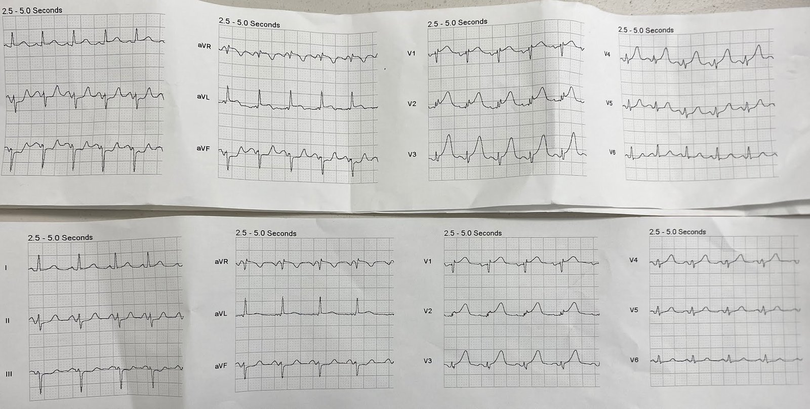
Đây là điện tâm đồ của bệnh nhân tại khoa cấp cứu (ED):

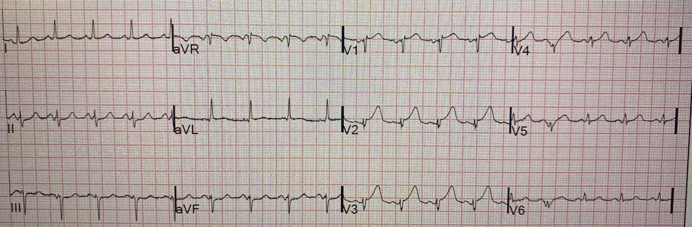
Ca 3. Đây là một ca được chẩn đoán và điều trị ngay lập tức, nhưng dù vậy cơ tim vẫn bị nhồi máu hoàn toàn, mà không hề xuất hiện ST chênh lên.
Điện tâm đồ trước viện:

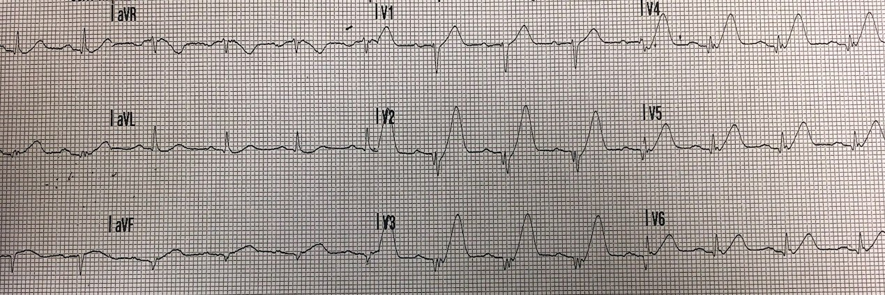
Tối cấp ở V1-V6, II và aVF
Chúng đối xứng và béo, và cũng cao. Chúng vượt cao hẳn so với QRS. Sóng T ở V6 hoàn toàn không lớn xét về giá trị tuyệt đối, nhưng nó rất lớn so với QRS.
Đây là điện tâm đồ tại khoa cấp cứu:

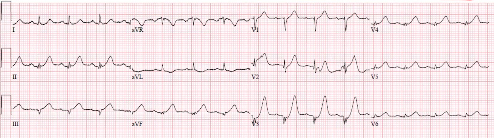
Và điện tâm đồ sau tái tưới máu:

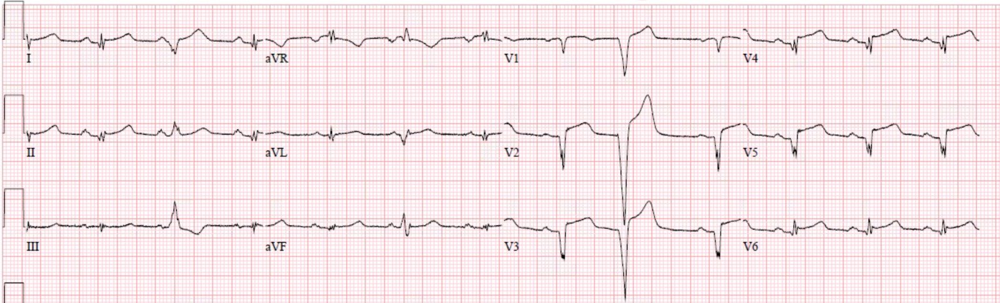
Mặc dù chưa bao giờ có ST chênh lên và bệnh nhân đã được tái tưới máu nhanh chóng, vẫn có sóng QS phát triển hoàn chỉnh, chỉ điểm nhồi máu thành trước nặng nề.
Hơn nữa, sóng T tối cấp không nhất thiết phải lớn, thậm chí không cần lớn xét theo tỷ lệ: Đôi khi sóng T tối cấp chỉ đối xứng mà không lớn, như Ca 3 dưới đây:
Ca 3.
Sóng T nhỏ nhưng là tối cấp chỉ vì chúng đối xứng.

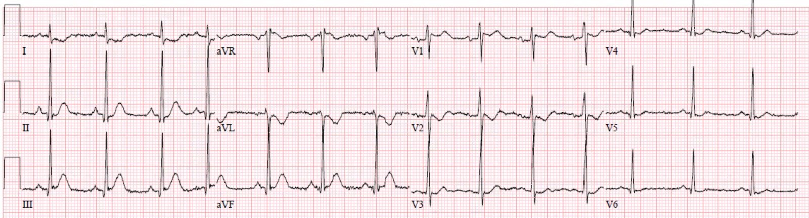
Chụp mạch vành vào ngày hôm sau, cùng với việc các sóng T này biến mất sau tái tưới máu, đã chứng minh rằng chúng thực sự là sóng T tối cấp do OMI RCA.
Đây là điện tâm đồ sau tái tưới máu:

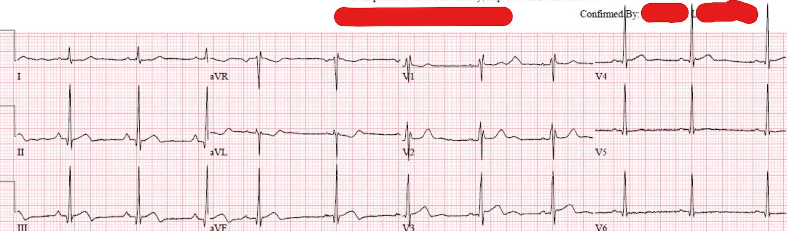
Đây là hình dạng sóng T thành dưới không đối xứng bình thường:

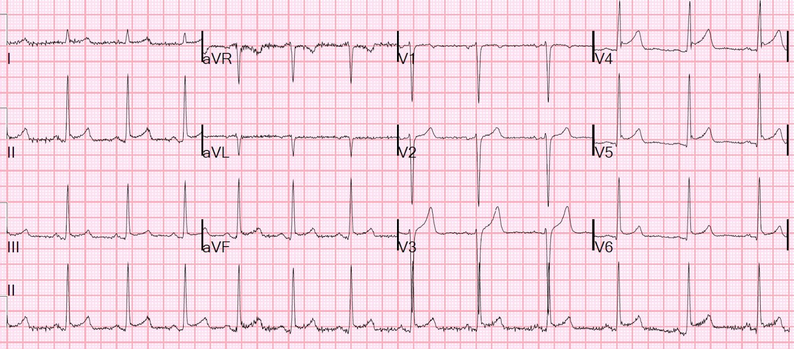
Sóng T tối cấp:
Mười (10) ví dụ về sóng T tối cấp ở chuyển đạo V2 (một vài ca ở V3) do tắc LAD cấp
10 ca sóng T tối cấp thành dưới
Mười ca sóng T tối cấp ở V4-V6
Hyperacute T-waves “On the way down” (Sóng T tối cấp “trên đà giảm xuống”)
Đây là 44 ca có sóng T tối cấp:

===================================
BÌNH LUẬN CỦA TÔI, bởi KEN GRAUER, MD (18/2/2020):
===================================
Chúng tôi xin gửi LỜI CẢM ƠN chân thành nhất đến độc giả đã gửi ca bệnh này. GHI NHẬN anh/chị ấy — vì bản tự vấn đầy trăn trở này! Nhìn lại thì luôn luôn dễ hơn nhiều qua “kính nhìn hồi cứu (retrospectoscope)”. Tôi sẽ tập trung bình luận vào một vài suy nghĩ bổ sung cho những điều Dr. Smith đã nêu.
- Để rõ ràng — tôi đã đưa lại và đánh nhãn 2 điện tâm đồ đầu tiên của ca này trong Hình 1.

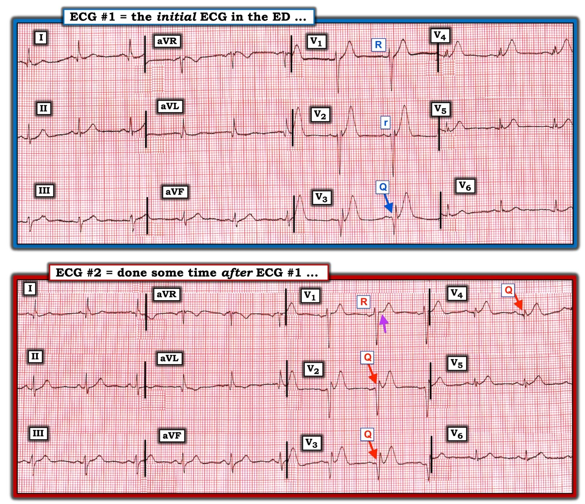
SUY NGHĨ CỦA TÔI về ca bệnh này — Mặc dù bệnh nhân trong ca này còn trẻ (32 tuổi) — anh ấy có hút thuốc lá — tiền sử gia đình đáng lo ngại (bố bị nhồi máu cơ tim năm 45 tuổi) — và, các triệu chứng của anh ấy là mới xuất hiện, và chính những triệu chứng mới này đã khiến anh ấy đến khoa cấp cứu.
- Đặc biệt khi bệnh sử có những đặc điểm đáng lo ngại — Trách nhiệm phải thuộc về chúng ta trong việc loại trừ (thay vì khẳng định) khả năng có một biến cố tim cấp. Vì vậy — NẾU điện tâm đồ ban đầu không bình thường, chúng ta cần chứng minh rằng các bất thường trên điện tâm đồ không phải là cấp tính (chứ không phải ngược lại).
- NẾU vẫn còn nghi ngờ sau khi đã đánh giá bệnh nhân hết khả năng của mình — Hãy nghiêng về phía thận trọng. Thà thông tim cho một bệnh nhân không cần — còn hơn không thông tim cho một người thật sự cần.
Về Điện tâm đồ #1 — Độc giả đã diễn giải một cách hệ thống, và anh/chị ấy đã xác định được các dấu hiệu bất thường chính. XEM KỸ HƠN điện tâm đồ #1:
- Ở các chuyển đạo chi — có sóng Q lớn hơn và rộng hơn dự kiến ở chuyển đạo I và aVL. Dù vậy, tôi không tin rằng các sóng Q ở chuyển đạo chi này có ý nghĩa đối với ca đang bàn — và tôi cho rằng nhìn chung các thay đổi ST-T ở chuyển đạo chi của điện tâm đồ #1 là không đặc hiệu.
- KHÔNG NHƯ VẬY ở các chuyển đạo ngực. Bắt đầu từ một sóng R rõ ràng ở chuyển đạo V1 (biên độ 3 mm) — có hiện tượng Mất sóng R (loss of R wave) từ V1 sang V2. Việc đây là dấu hiệu thật-cho-đến-khi-được-chứng minh-ngược-lại được củng cố bởi sóng Q rất rộng và sâu ở chuyển đạo V3 (mũi tên XANH DƯƠNG). Điều này gợi ý đã có nhồi máu cơ tim thành trước xảy ra vào một thời điểm nào đó.
- Độc giả đã nhận định đúng: “sóng T vùng trước rất cao ở V1 đến V5, đối xứng và lớn không tương xứng (đặc biệt ở chuyển đạo V4)”. Ở một bệnh nhân có triệu chứng mới — đặc biệt khi đi kèm với mất sóng R + sóng Q rất-lớn-và-rộng ở chuyển đạo V3 — mô tả này của độc giả chính là cách tôi định nghĩa sóng T tối cấp vùng trước.
- Tôi xin bổ sung rằng sóng T thực sự đầy-hơn-mức-cần-có ở đỉnh (ít nhất ở các chuyển đạo V1, V4 và V5) — và rằng các sóng T này rộng-hơn-mức-cần-có ở đáy (ít nhất ở các chuyển đạo V1, V3, V4 và V5) — vì vậy rõ ràng phải được xem là tối cấp ở một bệnh nhân có triệu chứng mới cho đến khi được chứng minh ngược lại.
Về Điện tâm đồ #2 — Chúng ta không được biết đã trôi qua bao lâu giữa lúc ghi điện tâm đồ #1 và #2. Điểm quan trọng là, dù tinh tế — đã có thay đổi qua các bản ghi liên tiếp giữa 2 bản ghi này.
- Tôi cho rằng không có thay đổi đáng kể ở các chuyển đạo chi giữa điện tâm đồ #1 và #2.
- NHƯNG — đã có mất thêm các lực khử cực hướng ra trước (anterior forces) — thể hiện bằng sự xuất hiện của một sóng Q rất rộng-và-sâu ở chuyển đạo V2 + một sóng Q ở chuyển đạo V4 (các mũi tên ĐỎ trên điện tâm đồ #2 chỉ các sóng Q).
- Như độc giả đã nhận xét — biên độ sóng T quả thực đã giảm ở nhiều chuyển đạo (tức là, sóng T ở điện tâm đồ #2 không cao bằng ở điện tâm đồ #1 tại các chuyển đạo V1, V2, V3 và V4). Bằng chứng thêm cho thấy sự giảm biên độ sóng T này phản ánh một thay đổi ST-T động (dynamic) — đến từ một đoạn ngắn bất thường ST thẳng đuỗn mà chúng ta thấy ở chuyển đạo V1 (mũi tên TÍM) — thay thế cho đoạn ST dốc lên mà trước đó chúng ta đã thấy ở chuyển đạo V1 của điện tâm đồ #1. Đây không phải là nhiễu. Nó là thật.
- LƯU Ý: Đúng là giờ đây có một thành phần âm nhỏ của sóng P ở chuyển đạo V1 và V2 trên điện tâm đồ #2 mà không có ở điện tâm đồ #1 — nhưng không thể quy tất cả các thay đổi ST-T động vừa mô tả (xảy ra ở từng chuyển đạo trong 4 chuyển đạo ngực đầu tiên) đơn giản cho việc đặt 2 chuyển đạo (tức là, V1,V2) quá cao trên ngực. NẾU cho rằng những khác biệt này giữa điện tâm đồ #1 và 2 chỉ đơn giản là do đặt sai vị trí điện cực — thì điện tâm đồ #2 lẽ ra phải được ghi lại ngay lập tức sau khi kiểm tra lại vị trí đặt điện cực ngực. Điểm lâm sàng này thực sự quan trọng — vì NẾU vẫn còn băn khoăn liệu các dấu hiệu điện tâm đồ có đang tiến triển cấp tính hay không — việc chứng minh có thay đổi ST-T động chứng tỏ rằng chúng đang tiến triển.
ĐIỀU CỐT LÕI — Tự vấn lương tâm qua các ca bệnh là điều KHÓ KHĂN. Nhưng đó là một phần vô giá để tối ưu hóa việc điều trị trong tương lai. Chúng tôi xin cảm ơn độc giả đã chia sẻ ca bệnh này với chúng ta — để tất cả chúng ta có thể học hỏi từ đó.